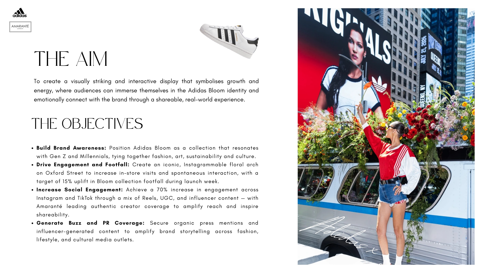
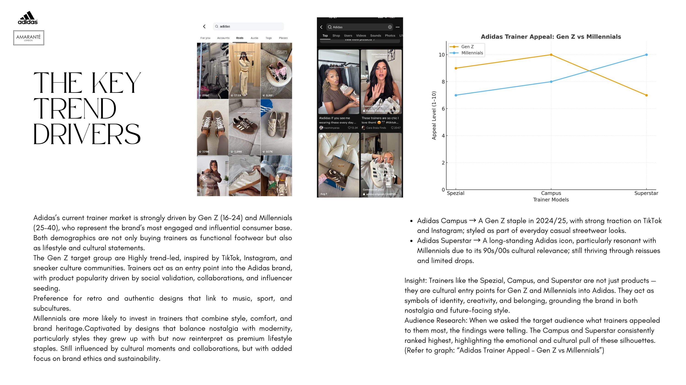
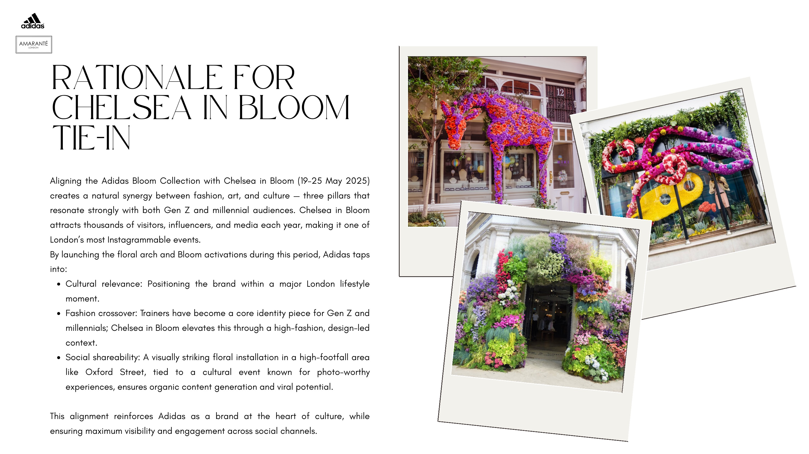
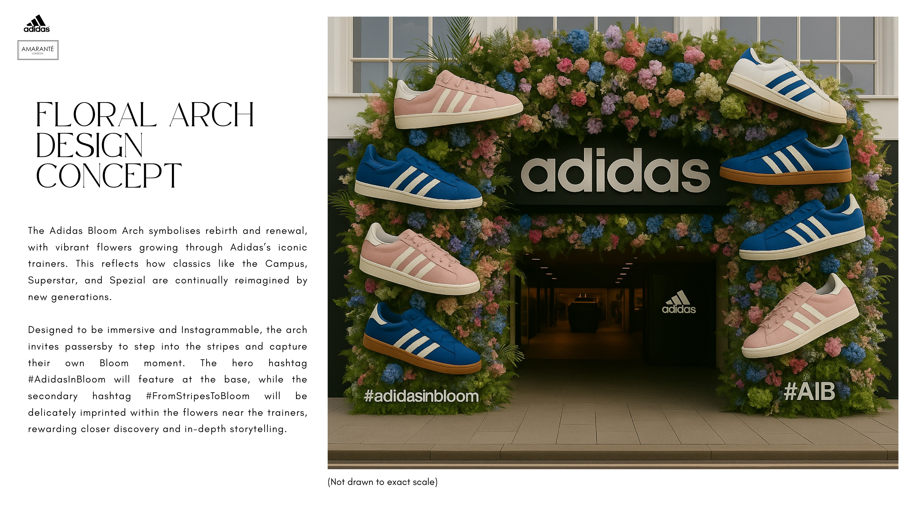
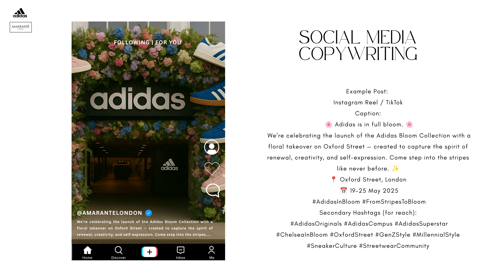
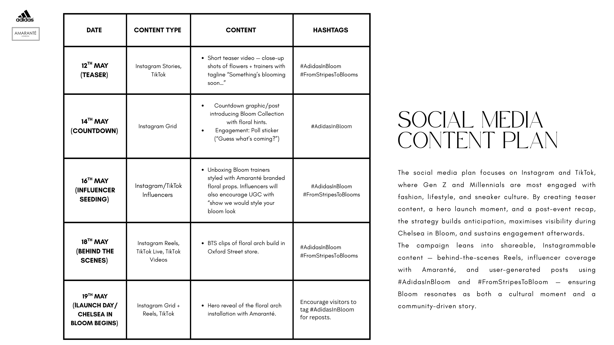

← Back to Work
← Back to Work
Brand PR & Campaign Strategy · 2025
Amaranté
London ×
Adidas
Brand Activation
Social Media Strategy
Influencer Relations
Campaign Planning
Oxford Street
Chelsea in Bloom
The Project
A campaign pitch proposing a partnership between Amaranté London, a sustainable luxury floral design studio, and Adidas: centred on the Bloom Collection. The concept was a visually striking, Instagrammable floral arch installation on Oxford Street, timed to coincide with Chelsea in Bloom (19–25 May 2025), London's most celebrated floral festival.
The strategy positioned Adidas Bloom at the intersection of fashion, art, and culture, where Gen Z and Millennial audiences are most engaged. By aligning with Chelsea in Bloom, the campaign tapped into a cultural moment already alive with media attention, installations, and social sharing, amplifying organic reach without heavy paid media.
Amaranté's sustainable floral designs served as both the visual centrepiece and the social hook: a high-footfall Oxford Street installation engineered to generate UGC, influencer coverage, and press mentions under the campaign hashtag #AdidasInBloom.
Campaign Objectives
The Aim
The campaign was built around four measurable objectives. Build brand awareness among Gen Z and Millennial audiences through an Oxford Street presence during Chelsea in Bloom. Drive a 15% uplift in footfall to the Adidas Bloom Collection. Increase Instagram and TikTok engagement by 70% through Reels, UGC, and influencer content, with Amaranté leading authentic creator coverage. Generate organic press mentions and influencer-led buzz that extended the campaign's reach beyond the installation itself.

Research
Estelle's Work
The Key Trend Drivers
Adidas's trainer market is driven by Gen Z (16–24) and Millennials (25–40): the brand's most engaged and influential consumer base. Both demographics treat trainers not just as footwear but as lifestyle and cultural statements. Gen Z are highly trend-led, inspired by TikTok, Instagram, and sneaker culture communities, with trainers acting as social validation and influencer seeding tools. Millennials invest in designs that balance nostalgia with modernity, drawn to styles they grew up with now reinterpreted as premium lifestyle staples.
Consumer research found that the Campus and Superstar consistently ranked highest in appeal across both demographics, highlighting their emotional and cultural pull. The Campus has become a Gen Z staple in 2024/25, with strong traction on TikTok and Instagram, styled as everyday casual streetwear. The Superstar retains long-standing resonance with Millennials through its 90s/00s cultural relevance, reissues, and limited drops.

Strategic Rationale
Estelle's Work
Rationale for the Chelsea in Bloom Tie-In
Aligning the Adidas Bloom Collection with Chelsea in Bloom creates a natural synergy between fashion, art, and culture: three pillars that resonate strongly with both Gen Z and Millennial audiences. Chelsea in Bloom attracts thousands of visitors, influencers, and media each year, making it one of London's most Instagrammable events. By launching the floral arch and Bloom activations during this window, Adidas taps into three strategic advantages:
- Cultural relevance: positioning the brand within a major London lifestyle moment when the city is already alive with installations, media attention, and social sharing.
- Fashion crossover: trainers have become a core identity piece for Gen Z and Millennials. Chelsea in Bloom elevates this through a high-fashion, design-led context.
- Social shareability: a visually striking floral installation in a high-footfall area, tied to a cultural event known for photo-worthy experiences, ensures organic content generation and viral potential.

Installation Design
Estelle's Work
Floral Arch Design Concept
The Adidas Bloom Arch symbolises rebirth and renewal: vibrant flowers growing through Adidas's iconic trainers, reflecting how classics like the Campus, Superstar, and Spezial are continually reimagined by new generations. Designed to be immersive and Instagrammable, the arch invites passersby to step into the stripes and capture their own Bloom moment. The hero hashtag #AdidasInBloom features at the base; the secondary hashtag #FromStripesToBloom is delicately imprinted within the flowers near the trainers, rewarding closer discovery and in-depth storytelling.

Concept render of the Adidas Bloom Arch on Oxford Street. Adidas Campus, Superstar, and Spezial trainers set within a full floral arch. Not drawn to exact scale.
Campaign Strategy
Estelle's Work
Social Media Activation Plan
The campaign hashtag strategy was built around two complementary lines: #AdidasInBloom as the hero tag (clarity and brand ownership) and #FromStripesToBlooms as the secondary (creative storytelling and community participation), linking Adidas's iconic three-stripe identity with the vibrant, transformative spirit of the Bloom Collection. The activation runs across Instagram and TikTok, with teasers in the build-up, behind-the-scenes content of the floral arch, the hero reveal, influencer coverage led by Amaranté, and UGC seeded under campaign hashtags.

Instagram Reel / TikTok caption: "Adidas is in full bloom. Celebrating the launch of the Adidas Bloom Collection with a floral takeover on Oxford Street. Come step into the stripes like never before." Oxford Street, London, 19–25 May 2025.

Five-day content rollout: Teaser (12 May), Countdown (14 May), Influencer Seeding (16 May), Behind the Scenes (18 May), Launch Day/Chelsea in Bloom Begins (19 May).
Content Rollout
Estelle's Work
Five-Day Content Calendar
The promotional plan spans Instagram and TikTok, structured to build anticipation before the Chelsea in Bloom window and sustain engagement throughout. Each phase has a distinct purpose: teasing the campaign, building desire via influencer seeding, revealing the installation, and amplifying UGC once the arch is live on Oxford Street.
| Date |
Platform |
Content |
Hashtags |
12 May
Teaser |
Instagram Stories, TikTok |
Short teaser video: close-up shots of flowers + trainers with tagline "Something's blooming soon..." |
#AdidasInBloom #FromStripesToBlooms |
14 May
Countdown |
Instagram Grid |
Countdown graphic introducing the Bloom Collection with floral hints. Engagement sticker: "Guess what's coming?" |
#AdidasInBloom |
16 May
Influencer Seeding |
Instagram/TikTok Influencers |
Unboxing Bloom trainers styled with Amaranté branded floral props. Influencers encouraged to show how they would style their Bloom look. |
#AdidasInBloom #FromStripesToBlooms |
18 May
Behind the Scenes |
Instagram Reels, TikTok Live, TikTok Videos |
BTS clips of the floral arch build in the Oxford Street store, revealing the scale of the installation ahead of launch day. |
#AdidasInBloom #FromStripesToBlooms |
19 May
Launch Day |
Instagram Grid + Reels, TikTok |
Hero reveal of the floral arch installation with Amaranté. Visitors encouraged to tag #AdidasInBloom for reposts. |
#AdidasInBloom: encourage UGC reposts |
Next Project
Event Hotline Rentals, Accra
→